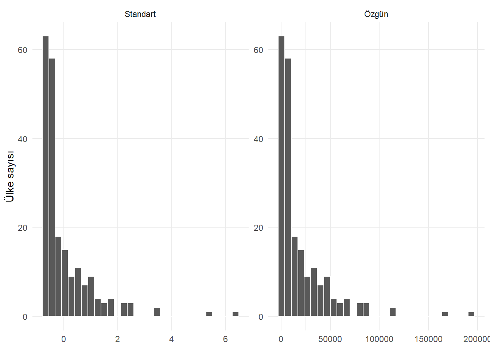
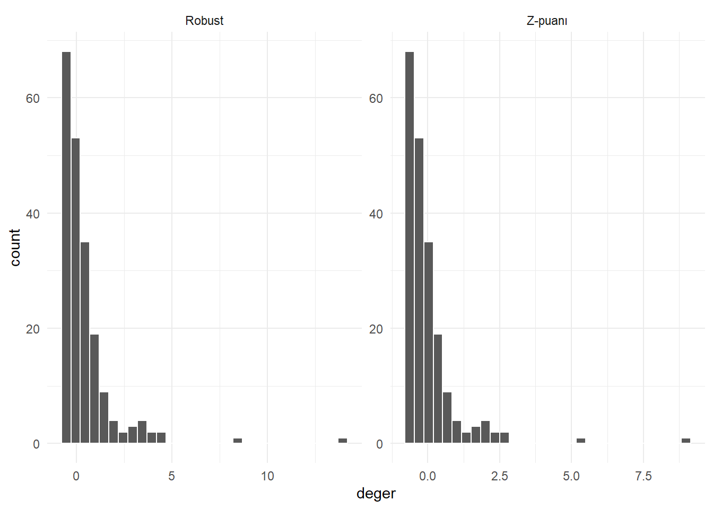

library(dplyr)
library(tidyr)
library(ggplot2)
countries <- readr::read_csv(
"data/countries.csv",
show_col_types = FALSE
)
indicator_dictionary <- readr::read_csv(
"data/indicator_dictionary.csv",
show_col_types = FALSE
)18 Ölçeklendirme
Bir veri setinde kişi başına GSYH on binlerle, yaşam beklentisi onlar düzeyinde, nüfus ise milyonlarla ifade edilebilir. Bu değişkenler aynı gözlem hakkında bilgi taşısa da sayısal büyüklükleri ölçü birimleri nedeniyle farklıdır. Uzaklık, ceza veya gradyan kullanan birçok yöntem bu farkı “önem farkı” gibi algılayabilir.
Ölçeklendirme, değişkenlerin sayısal merkezini veya yayılımını ortak bir kurala göre değiştirme işlemidir. Ölçeklendirme çoğu zaman sıralamayı ve dağılımın temel biçimini korur; fakat değişkenlerin hesaplamaya katkısını değiştirir.
Bu bölümde üç temel yaklaşımı karşılaştıracağız:
- min–max normalizasyonu,
- z-puanı standardizasyonu,
- medyan ve IQR kullanan sağlam (robust) ölçeklendirme.
Ölçeklendirme kararını şu sorularla kuracağız:
- Yöntem neden ölçeğe duyarlı?
- Merkezleme ve ölçekleme hangi büyüklükleri değiştirir?
- Aykırı gözlemler parametreleri nasıl etkiler?
- Eğitimde öğrenilen kural yeni veriye nasıl uygulanır?
- Hangi algoritmalar için ölçeklendirme gerekli veya gereksiz olabilir?
NotTerimler kaynaklara göre değişebilir
Bu kitapta normalizasyon min–max ile belirli aralığa taşıma, standardizasyon ise ortalamayı sıfır ve standart sapmayı bir yapma anlamında kullanılacaktır. Bazı paketler ve kaynaklar “normalize” sözcüğünü z-puanı için kullanır. Formülü görmek, etiketten daha güvenlidir.
18.1 Proje Verisi
Farklı birimlerdeki göstergeleri inceleyelim.
indicator_dictionary |>
filter(indicator %in% c(
"population_total",
"gdp_per_capita_usd",
"life_expectancy_total",
"internet_users_pct"
)) |>
select(indicator, unit, original_indicator)countries |>
summarise(
across(
c(
population_total,
gdp_per_capita_usd,
life_expectancy_total,
internet_users_pct
),
list(
min = ~ min(.x, na.rm = TRUE),
max = ~ max(.x, na.rm = TRUE)
)
)
) |>
pivot_longer(
everything(),
names_to = c("degisken", ".value"),
names_pattern = "(.*)_(min|max)$"
)Nüfusun büyük sayılara sahip olması, yaşam beklentisinden daha önemli olduğu anlamına gelmez. Yalnızca farklı birimlerle ölçülürler.
18.2 Ölçek Neden Bazı Yöntemleri Etkiler?
Merkezleme ve ölçekleme genel olarak pozitif (b) için
\[ Z=\frac{X-a}{b} \]
biçimindeki doğrusal-affin dönüşümlerdir. Bu dönüşümün etkileri doğrudan türetilebilir:
\[ E(Z)=\frac{E(X)-a}{b}, \qquad \operatorname{Var}(Z)=\frac{\operatorname{Var}(X)}{b^2}. \]
Pozitif (b), gözlemlerin sırasını ve dağılımın standartlaştırılmış biçimini korur; yalnızca sıfır noktasını ve birimi değiştirir. İki değişken ayrı ayrı pozitif sabitlerle ölçeklendiğinde Pearson korelasyonu da değişmez. Buna karşılık Öklid uzaklığı, katsayı cezası ve optimizasyonun geometrisi değişir. Bu ayrım, “veri değişmedi” ile “algoritmanın veriyi kullanma biçimi değişmedi” ifadelerinin aynı olmadığını gösterir.
Uzaklığa dayalı yöntemler
Öklid uzaklığı:
\[ d(i,j) = \sqrt{\sum_{p=1}^{P}(x_{ip}-x_{jp})^2} \]
biçimindedir. Büyük sayısal aralığa sahip değişkenin farkı kareler toplamına daha fazla katkı yapar.
Üç ülkelik öğretici bir örnek seçelim.
uc_ulke <- countries |>
filter(country %in% c("Türkiye", "Germany", "India")) |>
select(country, gdp_per_capita_usd, life_expectancy_total) |>
drop_na()
uc_ulkedist(uc_ulke |> select(-country)) 1
2 45614.77Kişi başına GSYH farkı binler düzeyinde, yaşam beklentisi farkı onlar düzeyinde olduğu için ham uzaklığı GSYH belirler. Z-puanıyla iki değişkenin yayılımını ortaklaştırdığımızda sonuç değişir.
uc_ulke_z <- scale(uc_ulke |> select(-country))
dist(uc_ulke_z) 1
2 2Bu, iki değişkenin eşit derecede “önemli” olduğunu kanıtlamaz. Ölçeklendirme yalnızca ölçü biriminden doğan baskınlığı azaltır; değişken önemine ilişkin alan kararının yerine geçmez.
Ceza kullanan modeller
Ridge ve lasso gibi düzenlileştirilmiş modeller katsayıların büyüklüğünü cezalandırır. Farklı ölçeklerdeki yordayıcıların aynı ceza altında karşılaştırılabilmesi için çoğunlukla standardizasyon gerekir.
Örneğin ridge regresyonu, artık kareler toplamına (_{j=1}{p}_j2) cezası ekler. Bir değişken metre, diğeri kilometre cinsinden yazılırsa aynı ilişkiyi temsil eden katsayıların sayısal büyüklükleri farklı olur; dolayısıyla ceza ölçü birimine göre değişir. Standardizasyon, cezanın her yordayıcıya karşılaştırılabilir bir ölçekte uygulanmasını sağlar (Hastie vd. 2009; James vd. 2023).
Buna karşılık cezasız sıradan en küçük karelerde, sabit terim bulunduğu ve aynı doğrusal bilgiler korunduğu sürece yordayıcıları merkezleyip ölçeklemek uyarlanmış değerleri değiştirmez. Katsayıların sayısal değeri ve yorumu değişir, fakat model aynı tahmin uzayını kullanır. Bu sonuç, “regresyonda ölçeklendirme her zaman gerekir” genellemesinin neden hatalı olduğunu gösterir.
Gradyan tabanlı optimizasyon
Sinir ağları ve bazı doğrusal modellerde çok farklı ölçekler optimizasyon yüzeyini uzatabilir; yakınsamayı yavaşlatabilir. Ortak ölçek sayısal kararlılığı ve öğrenme hızını iyileştirebilir.
Ölçeğe daha az duyarlı yöntemler
Karar ağaçları değişkenleri eşiklerle böler. Pozitif doğrusal bir ölçek değişikliği sıralamayı değiştirmediği için tek bir ağacın bölme adayları çoğunlukla değişmez. Random forest ve gradient boosted tree gibi ağaç tabanlı yöntemler bu nedenle ölçeklendirmeye genellikle daha az duyarlıdır.
Dikkat“Gerekmez” ile “zarar vermez” aynı değildir
Bir algoritmanın tahminleri ölçekten etkilenmese bile açıklama, uzaklık tabanlı yan adımlar veya birleşik iş akışı etkilenebilir. Karar kullanılan bütün süreç için verilmelidir.
18.3 Merkezleme ve Ölçekleme Ayrımı
Merkezleme, her değerden bir merkez ölçüsü çıkarır:
\[ x_i^c = x_i - \bar{x} \]
Ölçekleme, değerleri bir yayılım ölçüsüne böler:
\[ x_i^s = \frac{x_i}{s} \]
Standardizasyon ikisini birlikte yapar:
\[ z_i = \frac{x_i - \bar{x}}{s} \]
Merkezleme birimi değiştirmez; sıfır noktasını değiştirir. Standart sapmaya bölme ise sonucu birimsiz hale getirir.
18.4 Min–Max Normalizasyonu
Bir değişkeni [0, 1] aralığına taşımak için:
\[ x_i' = \frac{x_i - x_{min}}{x_{max} - x_{min}} \]
kullanılır. Minimum 0, maksimum 1 olur.
minmax_ogren <- function(x) {
c(
minimum = min(x, na.rm = TRUE),
maksimum = max(x, na.rm = TRUE)
)
}
minmax_uygula <- function(x, parametre) {
payda <- parametre["maksimum"] - parametre["minimum"]
if (payda == 0) {
return(rep(0, length(x)))
}
as.numeric((x - parametre["minimum"]) / payda)
}
internet_aralik <- minmax_ogren(countries$internet_users_pct)
countries |>
transmute(
country,
internet_users_pct,
internet_minmax = minmax_uygula(
internet_users_pct,
internet_aralik
)
) |>
arrange(internet_users_pct) |>
slice(c(1:3, (n() - 2):n()))Farklı bir aralığa taşıma
[a, b] aralığı için:
\[ x_i' = a + \frac{x_i-x_{min}}{x_{max}-x_{min}}(b-a) \]
kullanılır.
araliga_tasi <- function(x, alt = -1, ust = 1) {
x_min <- min(x, na.rm = TRUE)
x_max <- max(x, na.rm = TRUE)
alt + (x - x_min) / (x_max - x_min) * (ust - alt)
}
range(
araliga_tasi(countries$life_expectancy_total),
na.rm = TRUE
)[1] -1 1Min–max yönteminin aykırılara duyarlılığı
Minimum ve maksimum tek bir uç gözlemden güçlü biçimde etkilenir. CO₂ dağılımında bunu görelim.
co2_parametre <- minmax_ogren(countries$co2_per_capita)
countries |>
transmute(
country,
co2_per_capita,
co2_minmax = minmax_uygula(co2_per_capita, co2_parametre)
) |>
arrange(desc(co2_per_capita)) |>
slice_head(n = 10)Çok büyük maksimum, ülkelerin çoğunu 0’a yakın dar bir aralığa sıkıştırabilir.
Yeni veri aralık dışına çıkarsa
Eğitim maksimumundan daha büyük yeni bir değer [0,1] kuralıyla 1’den büyük sonuç üretir. Bu hata değildir; yeni gözlemin eğitim aralığını aştığını gösterir.
yeni_internet <- c(50, 100, 105)
minmax_uygula(yeni_internet, internet_aralik)[1] 0.4874554 1.0030782 1.0546405Sonucu zorla [0,1] içinde kesmek bilgi kaybettiren ayrı bir karardır. Algoritmanın gereksinimi yoksa otomatik yapılmamalıdır.
18.5 Z-Puanı Standardizasyonu
Z-puanı:
\[ z_i = \frac{x_i - \bar{x}}{s} \]
ile hesaplanır. Eğitim verisinde ortalama yaklaşık 0, standart sapma 1 olur.
yasam_ortalama <- mean(countries$life_expectancy_total)
yasam_sd <- sd(countries$life_expectancy_total)
countries_z <- countries |>
mutate(
life_expectancy_z =
(life_expectancy_total - yasam_ortalama) / yasam_sd
)
countries_z |>
summarise(
z_ortalama = mean(life_expectancy_z),
z_sd = sd(life_expectancy_z)
)Bir ülkenin z = 1.5 değeri, yaşam beklentisinin ülke örneklemi ortalamasının 1.5 standart sapma üzerinde olduğunu söyler. Bu değer bir olasılık değildir.
Base R ile scale()
gdp_z <- scale(countries$gdp_per_capita_usd)
head(gdp_z) [,1]
[1,] -0.6774107
[2,] -0.4744966
[3,] -0.5327906
[4,] -0.2262920
[5,] 0.8067567
[6,] -0.6041780attr(gdp_z, "scaled:center")[1] 19101.02attr(gdp_z, "scaled:scale")[1] 27464.02scale() matris döndürür ve kullandığı merkez ile ölçeği özniteliklerde saklar. Veri çerçevesinde yalın vektör gerekirse as.numeric() kullanılabilir.
countries |>
mutate(
gdp_z = as.numeric(scale(gdp_per_capita_usd))
) |>
select(country, gdp_per_capita_usd, gdp_z) |>
slice_head(n = 8)Standardizasyon dağılımı normal yapmaz
countries |>
transmute(
`Özgün` = gdp_per_capita_usd,
`Standart` = as.numeric(scale(gdp_per_capita_usd))
) |>
pivot_longer(everything(), names_to = "olcek", values_to = "deger") |>
ggplot(aes(x = deger)) +
geom_histogram(bins = 30, color = "white", na.rm = TRUE) +
facet_wrap(~ olcek, scales = "free") +
theme_minimal() +
labs(x = NULL, y = "Ülke sayısı")
Standardizasyon doğrusal bir dönüşümdür; sıralamayı, çarpıklığı ve uç gözlemlerin göreli konumunu değiştirmez.
18.6 Robust Scaling
Ortalama ve standart sapma aykırı gözlemlerden etkilenir. Daha sağlam bir seçenek medyan ve IQR kullanmaktır:
\[ x_i^r = \frac{x_i - median(x)}{IQR(x)} \]
robust_ogren <- function(x) {
c(
medyan = median(x, na.rm = TRUE),
iqr = IQR(x, na.rm = TRUE)
)
}
robust_uygula <- function(x, parametre) {
if (parametre["iqr"] == 0) {
return(rep(0, length(x)))
}
as.numeric((x - parametre["medyan"]) / parametre["iqr"])
}
co2_robust_parametre <- robust_ogren(countries$co2_per_capita)
countries |>
transmute(
country,
co2_per_capita,
z_puani = as.numeric(scale(co2_per_capita)),
robust_olcek = robust_uygula(
co2_per_capita,
co2_robust_parametre
)
) |>
arrange(desc(co2_per_capita)) |>
slice_head(n = 10)Robust scaling aykırı gözlemleri ortadan kaldırmaz. Merkez ve ölçeğin onlar tarafından daha az sürüklenmesini sağlar.
IQR mı MAD mı?
Alternatif olarak medyan mutlak sapma kullanılabilir:
\[ x_i^{MAD} = \frac{x_i - median(x)}{MAD(x)} \]
IQR orta %50’nin genişliğini, MAD ise medyandan tipik mutlak uzaklığı temel alır. İkisi de sağlamdır; yazılımın tanım ve sabitleri kontrol edilmelidir.
18.7 Üç Yöntemi Karşılaştırmak
gdp_minmax_param <- minmax_ogren(countries$gdp_per_capita_usd)
gdp_robust_param <- robust_ogren(countries$gdp_per_capita_usd)
gdp_karsilastirma <- countries |>
transmute(
country,
ozgun = gdp_per_capita_usd,
minmax = minmax_uygula(gdp_per_capita_usd, gdp_minmax_param),
z_puani = as.numeric(scale(gdp_per_capita_usd)),
robust = robust_uygula(gdp_per_capita_usd, gdp_robust_param)
)
gdp_karsilastirma |>
arrange(desc(ozgun)) |>
slice_head(n = 8)| Yöntem | Merkez | Yayılım | Tipik aralık | Aykırı duyarlılığı |
|---|---|---|---|---|
| Min–max | Minimum | Maksimum–minimum | Eğitimde [0,1] |
Yüksek |
| Z-puanı | Ortalama | Standart sapma | Sınırsız | Yüksek |
| Robust | Medyan | IQR | Sınırsız | Daha düşük |
18.8 Sabit ve Sıfıra Yakın Varyanslı Değişkenler
Bütün değerleri aynı olan bir değişkende maksimum–minimum, standart sapma ve IQR sıfırdır. Bölme işlemi tanımsız hale gelir.
sabit <- rep(5, 6)
sd(sabit)[1] 0IQR(sabit)[1] 0scale(sabit) [,1]
[1,] NaN
[2,] NaN
[3,] NaN
[4,] NaN
[5,] NaN
[6,] NaN
attr(,"scaled:center")
[1] 5
attr(,"scaled:scale")
[1] 0Sabit değişken model için ayırt edici bilgi taşımaz ve çoğunlukla çıkarılır. Sıfıra yakın varyanslı değişkenler de bazı modellerde kararsızlığa neden olabilir; fakat nadir bir sınıfı temsil ediyorsa önemli olabilir.
18.9 Eğitim ve Test Verisinde Doğru Uygulama
Ölçeklendirme parametreleri veriden öğrenilir. Ülkeleri öğretim amacıyla eğitim ve test kümelerine ayıralım.
set.seed(2026)
egitim_indeksi <- sample(
seq_len(nrow(countries)),
size = floor(0.80 * nrow(countries))
)
egitim <- countries[egitim_indeksi, ]
test <- countries[-egitim_indeksi, ]Eğitim ortalaması ve standart sapması hesaplanır.
gdp_egitim_ortalama <- mean(
egitim$gdp_per_capita_usd,
na.rm = TRUE
)
gdp_egitim_sd <- sd(
egitim$gdp_per_capita_usd,
na.rm = TRUE
)
egitim <- egitim |>
mutate(
gdp_z =
(gdp_per_capita_usd - gdp_egitim_ortalama) /
gdp_egitim_sd
)
test <- test |>
mutate(
gdp_z =
(gdp_per_capita_usd - gdp_egitim_ortalama) /
gdp_egitim_sd
)Test kümesinin standartlaştırılmış ortalamasının tam sıfır olmaması normaldir. Sıfır olsaydı test kümesinin kendi ortalamasının kullanıldığından şüphe ederdik.
c(
egitim_z_ortalama = mean(egitim$gdp_z, na.rm = TRUE),
test_z_ortalama = mean(test$gdp_z, na.rm = TRUE)
)egitim_z_ortalama test_z_ortalama
-3.251187e-17 1.851600e-01 18.10 recipes ile Öğrenme ve Uygulama
recipes paketinde recipe() işlem planını tanımlar, prep() parametreleri eğitim verisinden öğrenir, bake() aynı kuralları yeni veriye uygular (Kuhn vd. 2024).
library(recipes)
olcekleme_tarifi <- recipe(
life_expectancy_total ~
gdp_per_capita_usd +
internet_users_pct +
infant_mortality_rate,
data = egitim
) |>
step_normalize(all_numeric_predictors())
olcekleme_hazir <- prep(
olcekleme_tarifi,
training = egitim
)
egitim_hazir <- bake(olcekleme_hazir, new_data = NULL)
test_hazir <- bake(olcekleme_hazir, new_data = test)
tidy(olcekleme_hazir, number = 1)Paket işlevinin adı step_normalize() olsa da yaptığı işlem ortalama ve standart sapmayla z-puanı standardizasyonudur. Bu adlandırma, bölüm başındaki “terimden önce formülü kontrol etme” ilkesinin pratik bir örneğidir.
ÖnemliÖnce böl, sonra ölçekle
Test verisinin ortalama, standart sapma, minimum, maksimum, medyan veya IQR hesaplarına katılması veri sızıntısıdır. Çapraz doğrulamada parametreler her eğitim katında yeniden öğrenilir.
18.11 Hangi Yöntemi Seçmeliyiz?
Min–max normalizasyonu düşünülebilir:
- girdinin sınırlı bir aralıkta olması istendiğinde,
- görüntü pikseli veya fiziksel sınırlar gibi doğal alt/üst sınırlar anlamlı olduğunda,
- aykırı gözlemler önceden güvenilir biçimde ele alındığında.
Z-puanı standardizasyonu düşünülebilir:
- doğrusal modellerde katsayı büyüklüklerini ortak ölçekte karşılaştırırken,
- PCA, k-means, kNN ve SVM gibi ölçeğe duyarlı yöntemlerde,
- değişken dağılımları aşırı aykırı değilse.
Robust scaling düşünülebilir:
- gerçek ve korunması gereken uç gözlemler bulunduğunda,
- medyan ve orta %50 tipik merkezi daha iyi temsil ettiğinde,
- algoritma ortak ölçek gerektirirken klasik ölçüler kararsızsa.
Seçim yalnızca algoritmaya değil, verinin dağılımına, yeni verinin beklenen aralığına ve yorumlama amacına bağlıdır.
18.12 Sık Yapılan Hatalar
Normalizasyon ve standardizasyonu aynı saymak
Adlandırma değişebilse de min–max ile z-puanı farklı merkez ve ölçekler kullanır. Formül açıkça belirtilmelidir.
Kimlik değişkenlerini ölçeklendirmek
Sayısal görünen ülke, müşteri veya posta kodu ölçülebilir nicelik değildir. all_numeric() seçicisi anlam bilgisinin yerine geçmez.
Standardizasyonun normallik sağladığını sanmak
Z-puanı dağılım biçimini korur; yalnızca merkez ve yayılımı değiştirir.
Eksik değerleri görmezden gelmek
Birçok ölçek işlevi eksikleri hesaptan çıkarabilir, ancak dönüşmüş sütunda NA kalır. İmputasyon ve ölçeklendirme sırası planlanmalıdır.
Bütün veride parametre hesaplamak
Bu yaklaşım test dağılımını eğitim sürecine sızdırır.
Yeni değerleri otomatik kesmek
Min–max sonucu 1’i aşarsa yeni gözlem eğitim maksimumundan büyüktür. Kesme işlemi ayrıca gerekçelendirilmelidir.
Ağaç modellerinde zorunlu sanmak
Sıralama temelli bölmeler çoğunlukla doğrusal ölçek değişiminden etkilenmez. Gereksiz işlem iş akışını karmaşıklaştırabilir.
Sıfır varyansı kontrol etmemek
Payda sıfır olduğunda NaN oluşabilir. Sabit değişkenler önceden belirlenmelidir.
18.13 Egzersizler
Egzersiz 1
fertility_rate değişkenini [0,1] ve [-1,1] aralıklarına taşıyın. Minimum ve maksimumu doğrulayın.
Egzersiz 2
life_expectancy_total için z-puanlarını elle ve scale() ile hesaplayın. İki sonucu karşılaştırın.
Egzersiz 3
co2_per_capita için z-puanı ve robust scaling sonuçlarını çizerek karşılaştırın.
Egzersiz 4
Ham ve ölçeklenmiş gdp_per_capita_usd ile life_expectancy_total değişkenleri üzerinden ülke uzaklıklarını karşılaştırın.
Egzersiz 5
Bir değişkeni önce log dönüştürüp sonra standardize etmek ile yalnızca standardize etmek arasındaki dağılım farkını gösterin.
Egzersiz 6
Test verisinin kendi ortalamasıyla standardize edilmesinin neden sızıntı ve üretim sorunu olduğunu açıklayın.
Egzersiz 7
Eğitim maksimumunu aşan yeni değer için min–max sonucunu hesaplayın. Sonucu 1’e kesmenin bilgi kaybını tartışın.
Egzersiz 8
Sabit bir değişken için üç ölçeklendirme yönteminin nasıl davranması gerektiğini açıklayın.
Egzersiz 9
k-means, karar ağacı, lasso ve kNN için ölçeklendirme gereksinimini gerekçelendirin.
Egzersiz 10
recipes ile kişi başına GSYH, internet kullanımı ve bebek ölüm oranını standardize eden bir tarif oluşturun. Öğrenilen ortalama ve standart sapmaları tidy() ile çıkarın.
18.14 Egzersiz Çözümleri
Çözüm 1
dogurganlik_01 <- araliga_tasi(countries$fertility_rate, 0, 1)
dogurganlik_11 <- araliga_tasi(countries$fertility_rate, -1, 1)
range(dogurganlik_01)[1] 0 1range(dogurganlik_11)[1] -1 1Çözüm 2
z_el <-
(countries$life_expectancy_total - mean(countries$life_expectancy_total)) /
sd(countries$life_expectancy_total)
z_scale <- as.numeric(scale(countries$life_expectancy_total))
all.equal(z_el, z_scale)[1] TRUEÇözüm 3
countries |>
transmute(
`Z-puanı` = as.numeric(scale(co2_per_capita)),
`Robust` = robust_uygula(
co2_per_capita,
robust_ogren(co2_per_capita)
)
) |>
pivot_longer(everything(), names_to = "yontem", values_to = "deger") |>
ggplot(aes(x = deger)) +
geom_histogram(bins = 30, color = "white", na.rm = TRUE) +
facet_wrap(~ yontem, scales = "free") +
theme_minimal()
Çözüm 4
uzaklik_verisi <- countries |>
select(country, gdp_per_capita_usd, life_expectancy_total) |>
drop_na() |>
slice_head(n = 8)
dist(uzaklik_verisi |> select(-country)) 1 2 3 4 5 6 7
2 5572.861
3 3971.871 1600.990
4 12389.537 6816.700 8417.683
5 40761.208 35188.366 36789.352 28371.671
6 2011.266 3561.609 1960.626 10378.272 38749.942
7 18399.775 12826.933 14427.919 6010.238 22361.433 16388.510
8 9459.383 3886.537 5487.521 2930.164 31301.831 7448.119 8940.397dist(scale(uzaklik_verisi |> select(-country))) 1 2 3 4 5 6 7
2 2.2357356
3 1.7192155 0.5172520
4 1.6054276 1.0306097 0.7464959
5 4.1727758 2.7325181 2.9996641 2.6230843
6 0.1528724 2.1975861 1.6846770 1.5091001 4.0515027
7 2.3475042 1.0174159 1.1093247 0.7424006 1.9261641 2.2483800
8 1.9813075 0.4556689 0.4430979 0.5876132 2.5567304 1.9175846 0.6777728Ham uzaklık GSYH biriminden baskın biçimde etkilenir; standart uzaklık iki değişkenin standart sapma cinsinden farklarını kullanır.
Çözüm 5
gdp <- countries$gdp_per_capita_usd
data.frame(
yalniz_z = as.numeric(scale(gdp)),
log_sonra_z = as.numeric(scale(log(gdp)))
) |>
summarise(
yalniz_z_carpiklik = mean(yalniz_z^3, na.rm = TRUE),
log_z_carpiklik = mean(log_sonra_z^3, na.rm = TRUE)
)Log dönüşümü biçimi değiştirir; sonraki standardizasyon yalnızca yeni dağılımın merkez ve yayılımını ayarlar.
Çözüm 6
Test ortalaması eğitim sırasında bilinmemesi gereken geleceğe ait bilgidir. Üretimde tek bir yeni gözlem geldiğinde “test ortalaması” da yoktur. Eğitim parametreleri sabitlenip bütün yeni gözlemlere uygulanmalıdır.
Çözüm 7
egitim_ornek <- c(10, 20, 30, 40)
parametre <- minmax_ogren(egitim_ornek)
minmax_uygula(c(20, 40, 50), parametre)[1] 0.3333333 1.0000000 1.333333350 değeri 1’in üzerinde sonuç verir ve eğitim aralığının aşıldığını bildirir. 1’e kesmek, 40 ile 50 arasındaki farkı yok eder.
Çözüm 8
Sabit değişkende aralık, standart sapma ve IQR sıfırdır. Bölme yapılmamalı; değişken bilgi taşımadığı için çoğunlukla çıkarılmalı veya açıkça sıfıra eşlenmelidir.
Çözüm 9
- k-means ve kNN uzaklık kullandığı için ölçeğe duyarlıdır.
- Lasso katsayı büyüklüğünü cezalandırdığı için standardizasyon genellikle gerekir.
- Karar ağacı eşik ve sıralama kullandığı için pozitif doğrusal ölçek değişiminden çoğunlukla etkilenmez.
Çözüm 10
cozum_tarifi <- recipe(
life_expectancy_total ~
gdp_per_capita_usd +
internet_users_pct +
infant_mortality_rate,
data = egitim
) |>
step_normalize(all_numeric_predictors()) |>
prep(training = egitim)
tidy(cozum_tarifi, number = 1)18.15 Bölüm Özeti
Ölçeklendirme, ölçü birimlerinden doğan sayısal büyüklük farklarını yönetir. Min–max normalizasyonu eğitim minimum ve maksimumunu belirli aralığa taşır; z-puanı standardizasyonu ortalama ve standart sapmayı kullanır; robust scaling ise medyan ve IQR gibi aykırılara daha dayanıklı ölçülere dayanır.
Uzaklık, ceza ve gradyan kullanan yöntemler ölçekten güçlü biçimde etkilenebilir. Ağaç tabanlı yöntemler çoğunlukla daha az duyarlıdır. Ölçeklendirme değişken önemini belirlemez ve dağılımı normal yapmaz.
Bütün merkez ve yayılım parametreleri yalnızca eğitim verisinden öğrenilmeli, test ve yeni veriye aynı değerlerle uygulanmalıdır. Sabit değişkenler, eksikler, aykırı gözlemler ve yeni verinin eğitim aralığını aşması iş akışında açıkça ele alınmalıdır.
18.16 Kaynaklar ve Ek Okuma
Ölçeğin düzenlileştirme, uzaklık ve tahmin algoritmalarındaki rolü için (Hastie vd. 2009; James vd. 2023), regresyon katsayılarının merkezleme ve ölçekleme sonrasındaki yorumu için (Gelman vd. 2020), tekrar üretilebilir R tarifleri için (Kuhn vd. 2024) önerilir. Uygulamalardaki ülke göstergeleri World Development Indicators kaynağına dayanır (World Bank 2026).